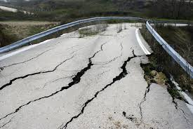
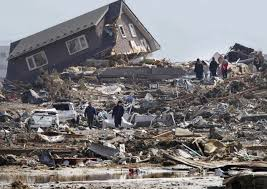
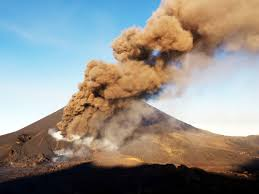
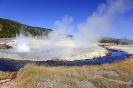

Earthquakes
An earthquake (also known as a quake, tremor or temblor) is the shaking of the surface of the Earth, resulting from the sudden release of energy in the Earth's lithosphere that creates seismic waves. Earthquakes can range in size from those that are so weak that they cannot be felt to those violent enough to toss people around and destroy whole cities. The seismicity, or seismic activity, of an area is the frequency, type and size of earthquakes experienced over a period of time. The word tremor is also used for non-earthquake seismic rumbling. At the Earth's surface, earthquakes manifest themselves by shaking and displacing or disrupting the ground. When the epicenter of a large earthquake is located offshore, the seabed may be displaced sufficiently to cause a tsunami. Earthquakes can also trigger landslides, and occasionally volcanic activity. In its most general sense, the word earthquake is used to describe any seismic event—whether natural or caused by humans—that generates seismic waves. Earthquakes are caused mostly by rupture of geological faults, but also by other events such as volcanic activity, landslides, mine blasts, and nuclear tests. An earthquake's point of initial rupture is called its focus or hypocenter. The epicenter is the point at ground level directly above the hypocenter.
Natural Occuring Earthquakes
Tectonic earthquakes occur anywhere in the earth where there is sufficient stored elastic strain energy to drive fracture propagation along a fault plane. The sides of a fault move past each other smoothly and aseismically only if there are no irregularities or asperities along the fault surface that increase the frictional resistance. Most fault surfaces do have such asperities and this leads to a form of stick-slip behavior. Once the fault has locked, continued relative motion between the plates leads to increasing stress and therefore, stored strain energy in the volume around the fault surface. This continues until the stress has risen sufficiently to break through the asperity, suddenly allowing sliding over the locked portion of the fault, releasing the stored energy. This energy is released as a combination of radiated elastic strain seismic waves, frictional heating of the fault surface, and cracking of the rock, thus causing an earthquake. This process of gradual build-up of strain and stress punctuated by occasional sudden earthquake failure is referred to as the elastic-rebound theory. It is estimated that only 10 percent or less of an earthquake's total energy is radiated as seismic energy. Most of the earthquake's energy is used to power the earthquake fracture growth or is converted into heat generated by friction. Therefore, earthquakes lower the Earth's available elastic potential energy and raise its temperature, though these changes are negligible compared to the conductive and convective flow of heat out from the Earth's deep interior.
Earthquakes And Volcanic Activities
Earthquakes often occur in volcanic regions and are caused there, both by tectonic faults and the movement of magma in volcanoes. Such earthquakes can serve as an early warning of volcanic eruptions, as during the 1980 eruption of Mount St. Helens. Earthquake swarms can serve as markers for the location of the flowing magma throughout the volcanoes. These swarms can be recorded by seismometers and tiltmeters (a device that measures ground slope) and used as sensors to predict imminent or upcoming eruptions.
Earthquake swarms
Earthquake swarms are sequences of earthquakes striking in a specific area within a short period of time. They are different from earthquakes followed by a series of aftershocks by the fact that no single earthquake in the sequence is obviously the main shock, therefore none have notable higher magnitudes than the other. An example of an earthquake swarm is the 2004 activity at Yellowstone National Park.[23] In August 2012, a swarm of earthquakes shook Southern California's Imperial Valley, showing the most recorded activity in the area since the 1970s.[24] Sometimes a series of earthquakes occur in what has been called an earthquake storm, where the earthquakes strike a fault in clusters, each triggered by the shaking or stress redistribution of the previous earthquakes. Similar to aftershocks but on adjacent segments of fault, these storms occur over the course of years, and with some of the later earthquakes as damaging as the early ones. Such a pattern was observed in the sequence of about a dozen earthquakes that struck the North Anatolian Fault in Turkey in the 20th century and has been inferred for older anomalous clusters of large earthquakes in the Middle East.
Earthquakes In Myanmar
There were two earthquakes in Myanmar which caused great damage in Bagan. They are;
---------------
1. April 2016 Myanmar Earthquake
2. August 2016 Myanmar Earthquake
See more about myanmar earthquakes by clicking ----